Configuring Federated Login
Federated Login provides authentication without revealing user login credentials to the Lyve Cloud service. Federated Login enables your users to use a single authentication method with the help of your organization’s Identity Provider (hereafter referred to as IdP) for Lyve Cloud users. Once the Lyve Cloud user signs in and has access to your organization's domain, the user then has direct access to the Lyve Cloud console. Hence the user need not perform a separate login process. To use Federated Login feature, your organization must have an authentication system which uses the SAML 2.0 protocol.
To configure Federated Login, contact your organization's IdP administrator to obtain the metadata file in XML format. Upload this file to configure Federated Login.
Security Assertion Markup Language (SAML) Protocol
The Security Assertion Markup Language (SAML) protocol is an open-standard, XML-based framework for authentication and authorization between two entities without a password:
A Service Provider (SP) agrees to trust the identity provider to authenticate users.
An Identity Provider (IdP) authenticates users and provides to service providers an authentication assertion that indicates a user has been authenticated.
In this scenario, Lyve Cloud is a Service Provider that will connect with your organization's Identity Provider to establish a Single Sign-On (SSO) access to your users.
Configure Lyve Cloud as a SAML Service Provider:
To configure Lyve Cloud as a SAML service provider:
Contact your organizations IdP administrator and obtain the metadata file in XML format to upload and configure Federated Login.
For more information on generating a metadata file for Okta, Google Gsuite, and Microsoft Azure, see Generating XML Metadata files for IdP.
On the left-hand menu, click the SAML Federation menu.
Note
If you have not configured Federated Login, the status is displayed as Not Configured.
On the Federated Login page, click Configure.
In the Configure Federated Login page, click Upload.
Select the XML file from the desired location, and select Open.
After SAML Metadata File is uploaded successfully, click Apply.
Note
You need to re-upload the file in case it is an invalid file
The following image displays a Federated Login set up.
After configuration Federated Login page displays the status as Configured, status name of the IdP Provider, and metadata file's Expiry Date.
In addition, the Identity Provider configuration details are provided. The following attributes are used to configure the IdP:
Provider URL
Entity ID
The following image displays sample IdP configuration details.
In this section, you will add some information to the IdP, so it knows how to receive and respond to SAML based authentication requests from the Lyve Cloud service provider. The instructions provided here are generic. You will need to find the appropriate screens and fields on the Identity Provider.
Locate the screens from the Identity Provider that allow you to configure SAML.
The IdP must know where to send the SAML assertions after it has authenticated a user. This is the Provider URL in Lyve Cloud. The IdP might call this Assertion Consumer Service URL or Application Callback URL.
https://YOUR_TENANT_URL/login/callback?connection=YOUR_CONNECTION_NAMEThe connection URL parameter is required for identity provider-initiated flow.
Note
If you have custom domains set up, use the custom domain-based URL rather than your Lyve Cloud domain in the following format: https://auth.lyve.seagate.com/login/callback?connection=YOUR_ACCOUNT_ID
Enter Entity ID in the Audience or Entity ID field from Lyve Cloud:
audience:urn:lyvecloud:YOUR_TENANT:YOUR_CONNECTION_NAMEIf IdP provides a choice for bindings, you should select HTTP-Redirect for Authentication Requests.
The Single Logout Service URL, where SAML logout requests and/or responses from the Identity Provider must be sent and should be configured as:
https://YOUR_DOMAIN/logoutSigning Logout Requests: When configuring the IdP, make sure that SAML Logout Requests sent to the service provider are signed.
Lyvecloud reads “email” attribute from your identity profile. Some identity providers send “email” by default, while some require you to configure it to send “email”.
Auth0 and Azure
Sends email by default. No additional configuration is required.
G Suite
It requires a configuration to send an email attribute.
To configure an email attribute for G Suite:
Login to the GSuite app and click Apps in the left menu, and then click Web and mobile apps.
Select the SAML app to edit and update attribute mapping.
In the SAML attribute mapping section, click arrow to edit.
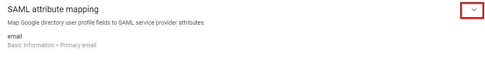In the Attributes mapping section, add the following attributes and click Save.
Figure 1.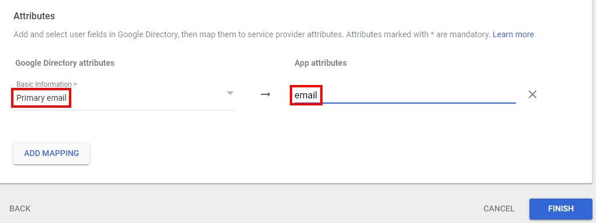
Okta
It requires a configuration to send an email attribute.
To configure an email attribute for Okta:
On the left-hand menu select Applications and then click Applications.
On the Applications page, click the application to edit, and select General.
Click Edit in SAML settings.
Click Next in General Settings without making any change.
In the Attribute Statements (optional) section, click Add Another to add an attribute statement, and update the following attributes:
Name = email
Value = user.email
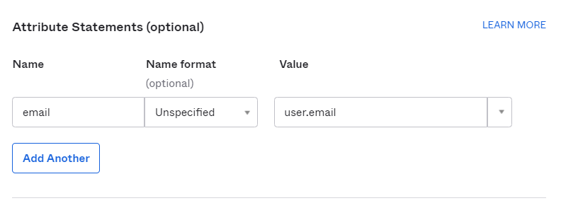
Troubleshooting SSO
If your application doesn't work the first time, you should clear your browser history and cookies before you test again. The browser may otherwise not pick up the latest version of your HTML page or it may have outdated cookies that impact execution.
While troubleshooting SSO:
Capture an HTTP trace of the interaction: Use any of the available tools to capture the HTTP traffic from your browser for analysis.
Search for HTTP Trace
Capture the login sequence from start to finish and analyze the sequence of GETs to determine how far in the expected sequence is achieved.
See a redirect from your original site to the Service Provider and then to the Identity Provider.
A post of credentials if you had to log in.
Then a redirect back to the callback URL or the Service Provider.
Finally a redirect to the callback URL specified in your application.
Ensure the cookies and javascript are enabled for your browser.
Check to make sure that the callback URL specified by your application in its authentication request is listed in the Allowed Callback URLs field.
The http://samltool.io tool can decode a SAML assertion and is a useful debugging tool.
Updating the metadata file
You need to update the metadata file before the certificate expires. Contact your IdP administrator to get the updated XML file. If you make any updates and regenerate metadata.xml, you must delete the old metadata file and reupload the updated file. If you just upload the updated file, it may not make changes to the old file.
To update the metadata file:
On the left-hand menu, click SAML Federation.
On the SAML Federation page, click Update Metadata File.
Select the XML file from the desired location and click Open.
After the SAML Metadata File is uploaded successfully, click Apply.
Deleting existing IdP configuration
To delete the IdP:
On the left-hand menu, click the SAML Federation menu.
On the SAML Federation page, click Delete IdP.
In the Delete IdP configuration confirmation box, click Yes.
Generating XML metadata files for IdP
Different types of IdP products have their own way of generating XML metadata files. This section describes how to generate XML metadata files for Okta, Google GSuite, and Microsoft Azure Active Directory (AD).
Pre-requisites
Create an Okta account and add a user as an administrator for configuration.
Lyve Cloud account name (Tenant name) and administrators account in the console.
Create an application in Okta for Lyve Cloud and log in as administrator.
On the left-hand menu, select Applications and then click Applications.
Click Create App Integration.
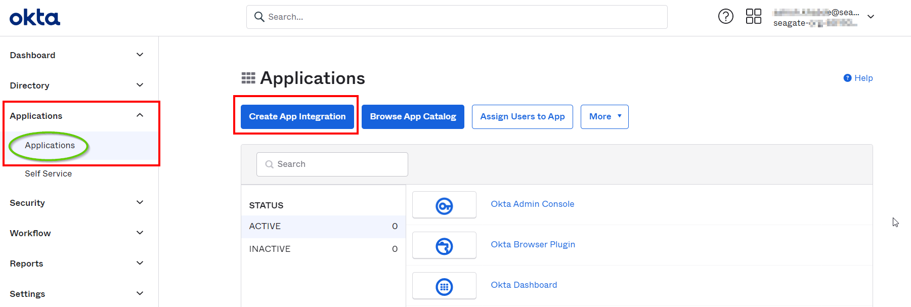In the Create a new app integration dialog, select SAML 2.0, and then click Next.
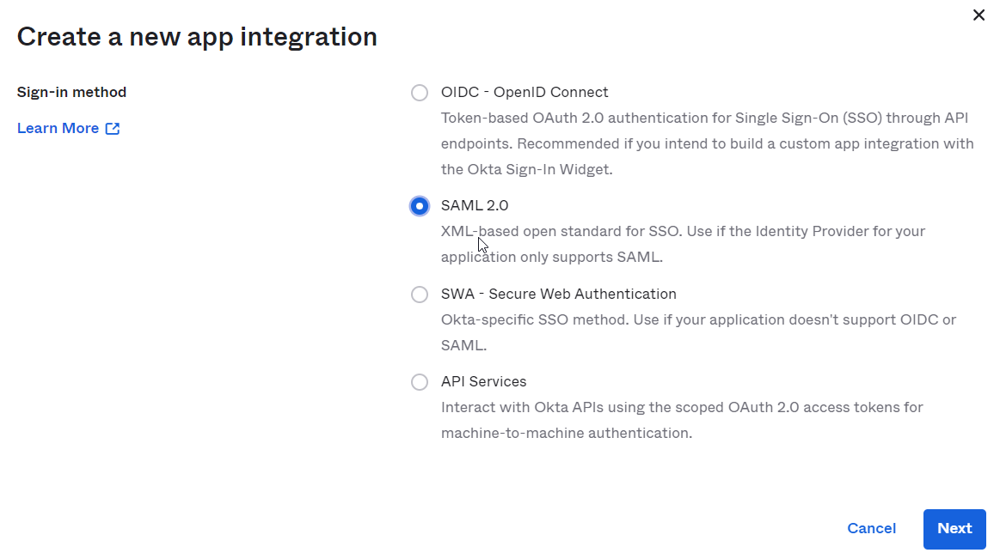In the Create SAML Integration section, enter the App name in the General Settings.
In the Configure SAML section, select the following SAML Settings.
Audience URI (SP Entity ID): Enter the SP entity ID in the following format: urn:lyvecloud:<TENANT>-saml
Single sign on URL: Enter the URL in the following format: https://auth.lyve.seagate.com/login/callback?connection=<TENANT>-saml.
For example, consider your Lyve Cloud account (tenant) is mylctenant1 in this case:
The Single sign on URL is: https://auth.lyve.seagate.com/login/callback?connection=mylctenant1-saml
The SP Entity ID uri: lyvecloud: mylctenant1 –saml
Note
The Single sign on URL and SP Entity ID is generated in configuring Lyve Cloud federated login 2.2. If the values are different as mentioned in the above step, you must update the attributes in the application.

In the Attribute Statements section set the following values and click Next.
Name: email
Value: user.email
In the Feedback section, provide feedback to help them understand why the Okta application was configured.
Select the appropriate option if you are an OKTA customer or a partner, and click Finish.
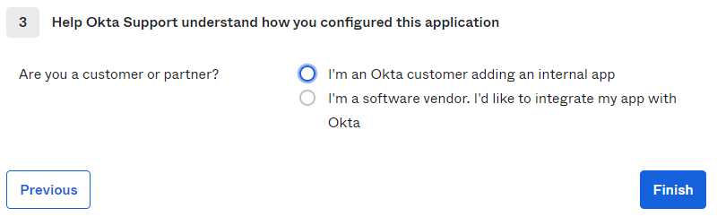
After the application is generated, you must retrieve the XML metadata file.
To retrieve XML metadata file:
Click Sign On tab.
In the Settings section, click Save and add .xml extension to the file.
This is the XML file that is used to configure Lyve Cloud federation.
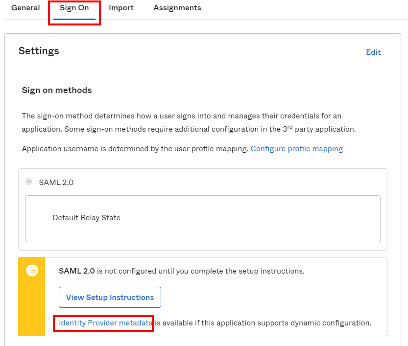
How can an Okta user login to Lyve Cloud?
Add a user to your Okta account and assign apps to the users.
First assign the Okta application to the users. Create a user and assign the authentication type as Federated, ensure that the account is configured as Federated Login. For more information, see, Adding a user.
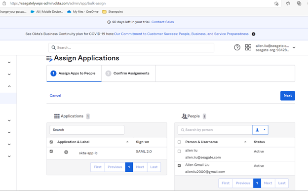
An Okta user can log in to Lyve Cloud account by two ways:
Select the tile on the Okta Home page to connect to Lyve Cloud. You are redirected to the Lyve Cloud console and are logged in automatically.
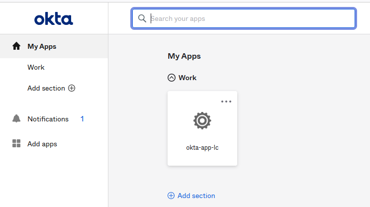Copy the App Embed link from the General tab of the Okta application, and paste into a browser.
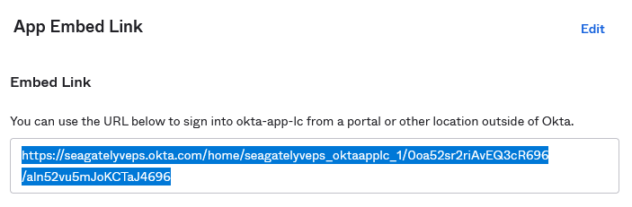
Create an application in GSuite for Lyve Cloud and log in as administrator.
Click Apps in the left menu, and click Web and mobile apps.
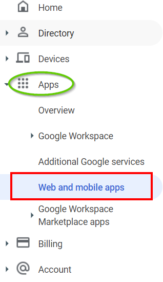In the Web and mobile apps section, click Add App and then select Add custom SAML app.
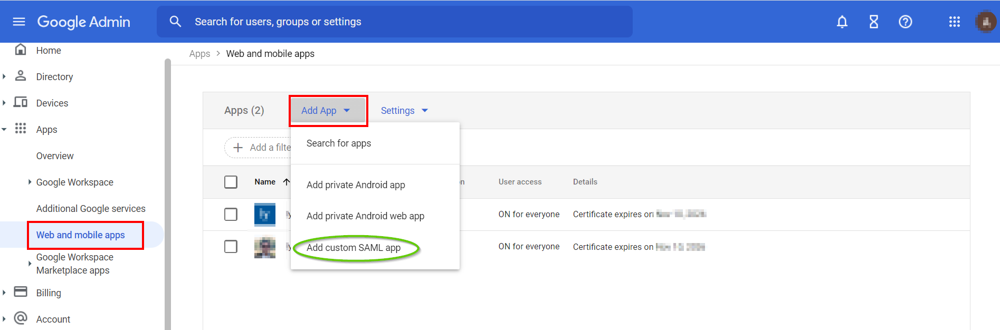In the App details section, provide the App name and optionally upload the App icon, then select Continue
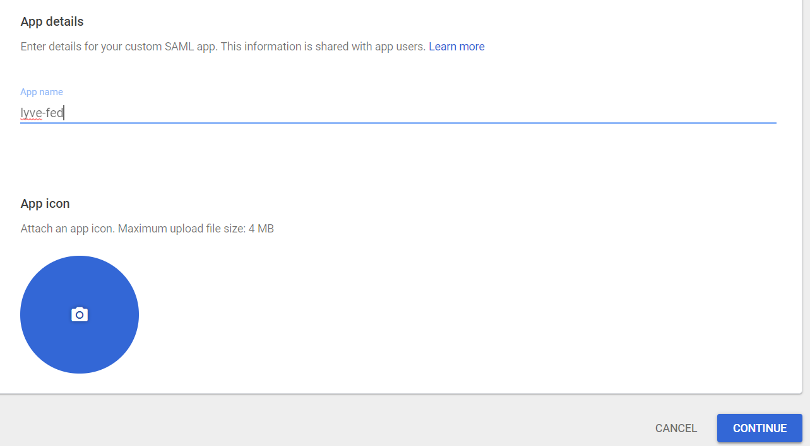Click DOWNLOAD METADATA and save the file as an .xml extension, and select Next.
Note
This XML file is used to enable SSO Federation.
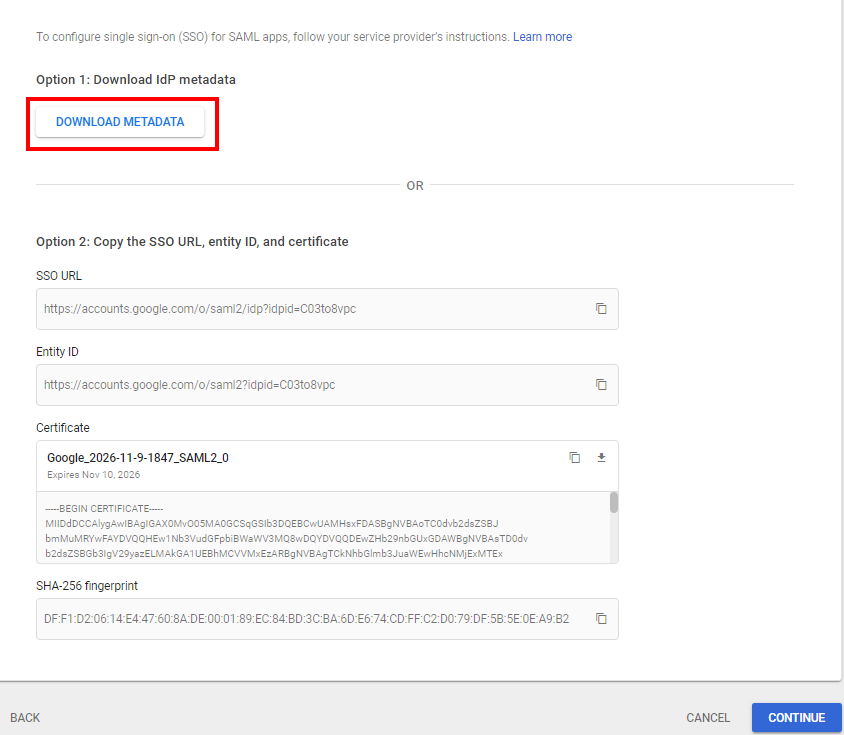In the Service Provider details section, enter the following info:
ACS URL: Enter the URL in the following format: https://auth.lyve.seagate.com/login/callback?connection=<TENANT>-saml
Entity ID: Enter the SP entity ID in the following format: urn:lyvecloud:<TENANT>-saml
For example, Consider your Lyve Cloud account (tenant) is mylctenant1 in this case:
The Single sign on URL is https://auth.lyve.seagate.com/login/callback?connection= mylctenant1 -saml
The SP Entity ID is urn:lyvecloud: mylctenant1 –saml
Enter the following info in the NAME ID section:
In Name ID Format, select EMAIL from the drop-down list.
Select Basic Information> Primary email from the drop-down list.
Select the Continue tab as shown below.
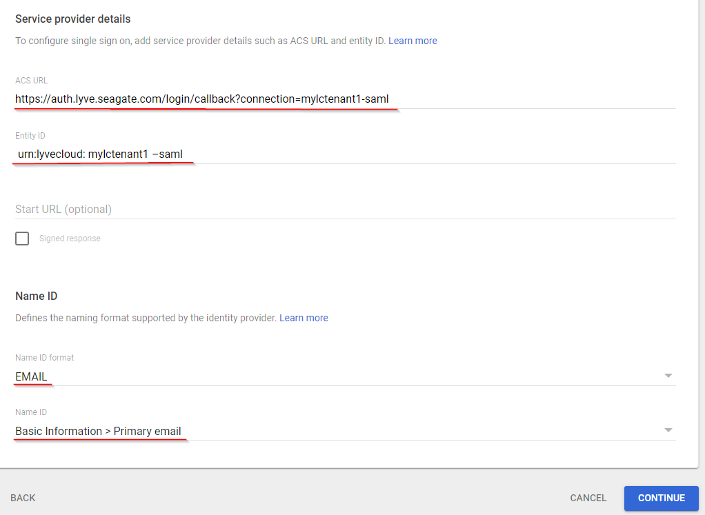In the Attributes mapping section, add the following attributes and click Finish.
Google Directory Attributes: Primary email
App attributes: email
Once the app is successfully created, the configuration details are displayed.
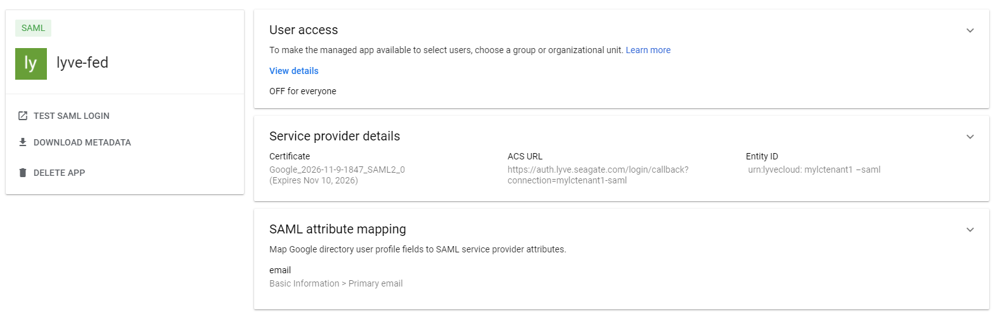In the User access section, enable the user access, select ON for everyone and then select Save.
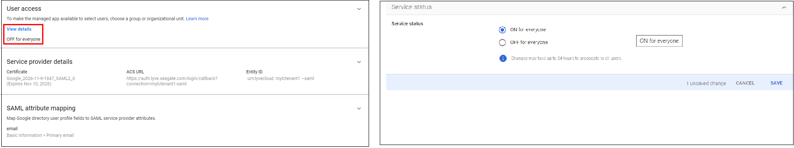Download Metadata file from the account.
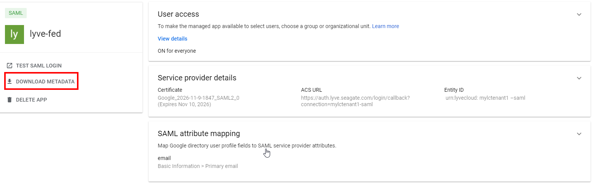
How can a GSuite user log in to Lyve Cloud?
To login to Lyve Cloud user as an GSuite user:
Log in to your Google account at www.google.com.
In the right-up corner of the page, select the Lyve Cloud app icon:
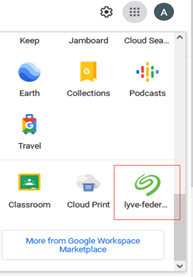
Create an application in Azure portal for Lyve Cloud and log in as administrator.
In the navigation pane, click Azure Active Directory and then select Enterprise applications.
In the Enterprise application section, click New application.
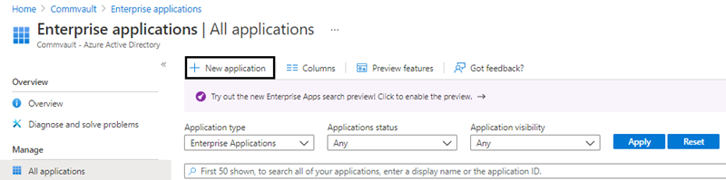In the Browse Azure AD Gallery section, click Create your own application.
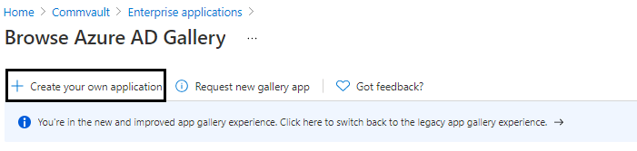In Create your own application, enter a name for the application and select the purpose of using the application as Integrate any other application you don't find in the gallery (Non-gallery), and then select Create.
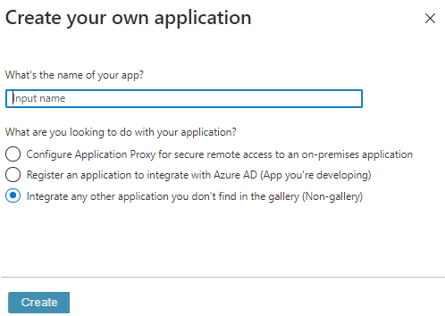In the navigation pane, select Single sign-on, and then click the SAML.
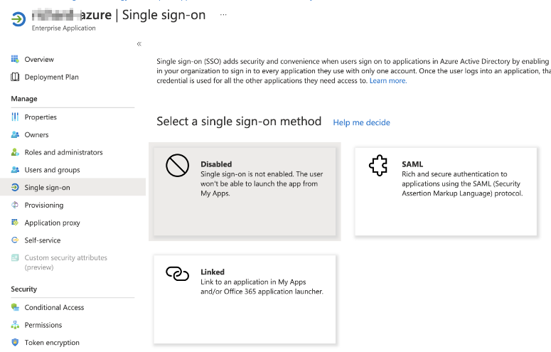In the Basic SAML Configuration section, click Edit and enter the following:
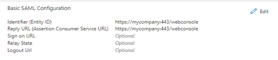Identifier (Entity ID): urn:lyvecloud:<tenant_short_name>-saml.
For example: urn:lyvecloud:seagate-saml
Reply URL (Assertion Consumer Service URL): https://auth.lyve.seagate.com/login/callback?connection=<tenant_short_name>-saml .
For example: https://lyvecloud-sandbox.us.auth0.com/login/callback?connection=seagate3-saml
In the SAML Signing Certificate section, click Download against Federation Metadata XML.
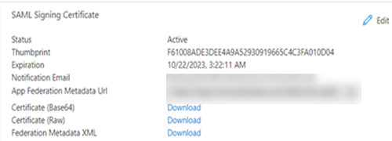This XML metadata file is used to upload for Federation configuration on Lyve Cloud console. For more information, see Configure Lyve Cloud as a service provider.
How can a Microsoft Azure user log in to Lyve Cloud?
Before you login, ensure the user must be an existing AD user, so users can utilize SSO via Azure AD.
To login to Lyve Cloud user as an Azure user:
Log in to the Azure account as the administrator.
Select Users and groups and then select Add user/group to add the existing Azure user. This user is granted permission to use Lyve Cloud application.
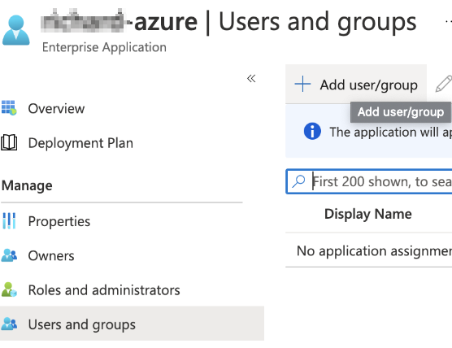Select Properties and copy the User access URL. You must provide this URL to the user to login Lyve Cloud using Azure credentials.
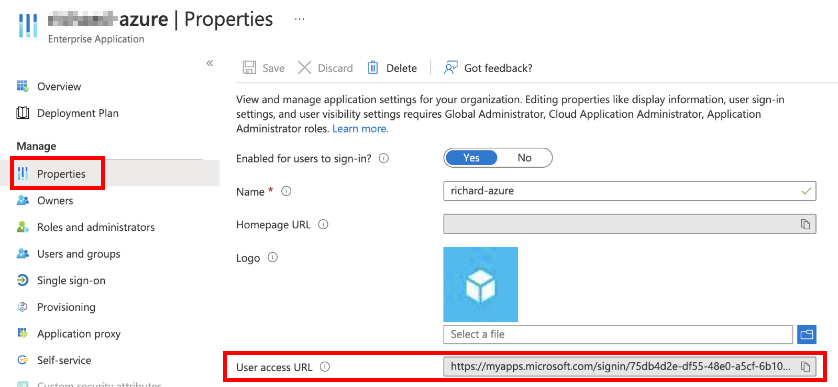